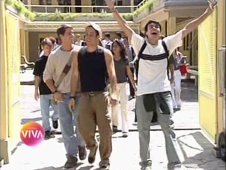
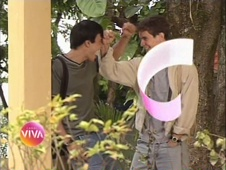
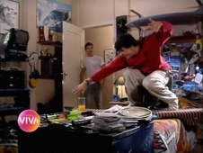
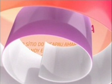
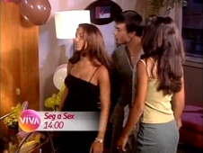
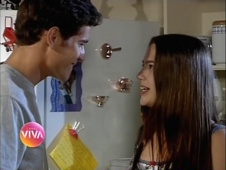

Malhação Múltipla Escolha - 1ª fase
| reprisado de | 19/05/2010 a 09/11/2010 |
|---|---|
| em 125 capítulos | |
| frequência | segunda-feira a sexta-feira |
| faixa | duas da tarde |
| horário alternativo | seg a sex, 9h |
Programa exibido originalmente nos fins de tarde da Globo, em fase que pela primeira vez centrou os conflitos na convivência escolar dos personagens. Malhação amadureceu seu formato, aproximando-se de uma novela, ao tecer núcleos secundários através das famílias dos estudantes do colégio Múltipla Escolha, mas sem deixar de renovar, anualmente, demais cenários e protagonistas, responsáveis por representar uma nova temporada, como em uma série.
Malhação foi o terceiro programa de cunho infantojuvenil a ser exibido no Viva, e estreou às nove da manhã de 19/05/2010, quarta-feira. Na grade inicial, esse tipo de conteúdo ocupava uma sequência matutina, que, para além da novela, exibia Sítio do Picapau Amarelo, às 8h, e Sandy & Junior, às 8h30, sem horários alternativos. Em agosto de 2010, a edição do dia de Mais Você, que tinha dois horários no Viva (13h a 14h30 e 18h a 19h30) perdeu o trecho do início da tarde. Assim, escalou-se a sequência Sítio do Picapau Amarelo / Sandy & Junior / Malhação para 13h, 13h30 e 14h, respectivamente. Os horários da manhã não foram descontinuados, e tornaram-se alternativos.
chamadas
Quando o Viva estreou, todos os programas de sua faixa infantojuvenil eram anunciados em uma mesma chamada. "Você conhece a pílula falante? Sabe o que significa dig-dig-joy dig-joy-popoy? E lembra do Perereca e sua turma? Então, o seu lugar é aqui no Viva! De segunda a sexta, a partir das oito da manhã: Sítio do Picapau Amarelo, Sandy & Junior e Malhação."
- 
- 
Em agosto, a mesma chamada foi atualizada com os novos horários principais das atrações.
- 
- 
Uma chamada própria passou a se fazer presente com o novo horário: "as temporadas de Malhação que marcaram a vida de muita gente estão de volta! E você vai lembrar tudo o que essa turminha aprendeu na escola... (...) Malhação, de segunda a sexta, duas da tarde, aqui, no Viva!"
- 

No mês de outubro de 2010, com o ingresso de Caça Talentos à sequência diária de infantojuvenis, a chamada em conjunto foi atualizada: "Aqui a gente sabe como é bom ser criança! Mas, convenhamos, crescer também é uma delícia. Suas tardes são mais divertidas com o Sítio do Picapau Amarelo, Caça Talentos e Malhação!"
- 